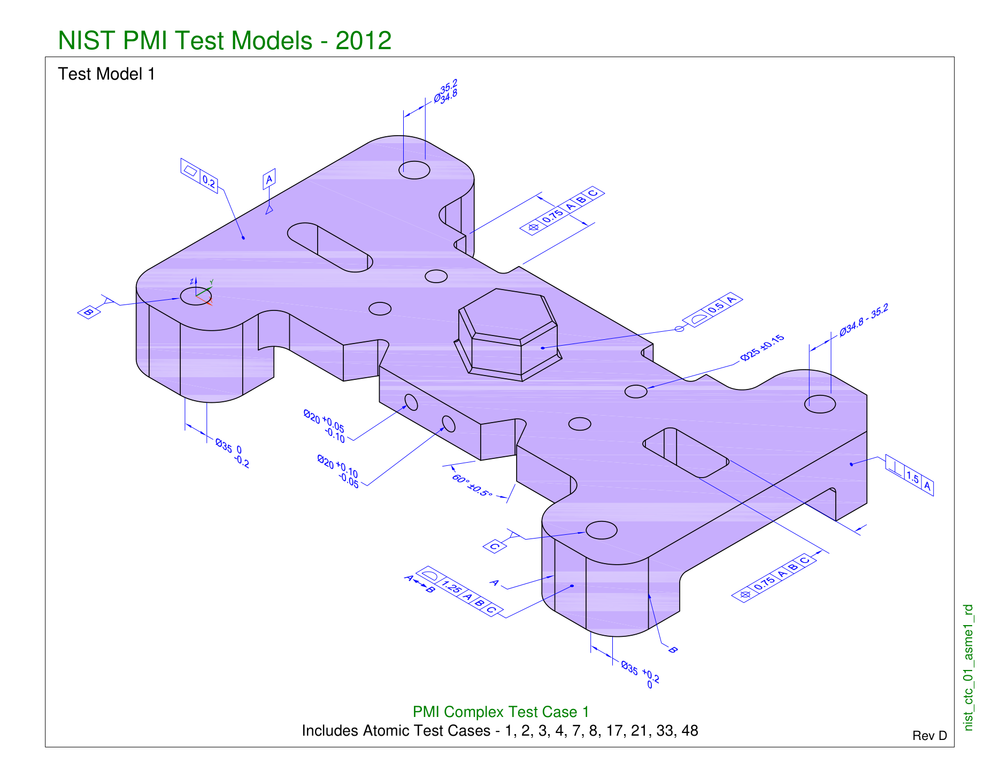

Drawing JSON shape research for the case study, 2026-10-31.
Which JSON shape should a drawing turn into?
Same 17 callouts from drawing CTC-01, shown in three shapes. The shape chosen is the one the gold labels, the eval and the pipeline all use. Recommendation: Option A with two extra fields, because B and C can then be produced from it, and the reverse is not true.
The drawing we are converting: CTC-01 (one sheet, 17 value callouts, no unit printed)
Red numbers are the callout ids used in every JSON below. Hover a row in the table to read the callout in plain words.

| # | As printed | Callout | Kind (Y14.5 wording) | Belongs to | Means |
|---|
callout is one of: dimension, feature_control_frame, datum_feature_symbol, datum_target, note, title_block, surface_texture, thread. For a feature_control_frame, kind is the geometric characteristic in the standard's wording: straightness, flatness, circularity, cylindricity, profile_of_a_line, profile_of_a_surface, angularity, perpendicularity, parallelism, position, concentricity, symmetry, circular_runout, total_runout. For a dimension, kind is diameter, radius, linear or angular, and tolerance_style says how the tolerance was written: limits, plus_minus, unilateral, bilateral_unequal, basic, reference. The eval matches on value, unit and kind, so these words are the ones the extractor must get right.
callout says what sort of thing was printed, kind uses the standard's exact wording. A size is a number with a tolerance (diameter 25 ±0.15). A geometric control is the boxed frame with a symbol: flatness, position, profile, perpendicularity. A datum (A, B, C) is a reference face or hole the controls measure from. CTC-01 prints no unit; the NIST CTC sheets are millimetres by convention, so the JSON records the unit as inferred.
Who reads this JSON
Resourcly sells parts intelligence to industrial manufacturers. Three people meet the JSON. The shape must be obvious to the first, correct for the second, and queryable for the third.
1. Buyer or maintenance engineer
Needs to know which numbers matter when sourcing or replacing the part: critical diameters, material, revision. Reads meaning sentences, not symbols. Newest to drawings.
Wants: a flat list with plain words.
2. Inspector or supplier quality
Checks a made part against the drawing. Needs each requirement as a checkable row: nominal, lower and upper limit, which datums, which feature.
Wants: limits computed, grouped by feature.
3. Data platform (a million drawings)
Indexes, searches and compares drawings at scale. Needs stable field names, enums for kind, numbers as numbers, units explicit, a page and position to highlight.
Wants: flat, typed, deduplicable records.
The three shapes
Option A - flat callout list
recommended baseOne record per thing printed on the sheet. The record says what was printed, what it belongs to, what kind it is and what it means. Nothing is nested.
- Matches how the extractor sees the page: one callout at a time, so fewer grouping mistakes.
- Easiest to label and to score: a prediction either matches a gold record or it does not.
- Persona 1 reads the
meaningcolumn; persona 3 gets typed flat rows.
- Persona 2 has to group rows by feature in their head.
- Limits are not computed; "35 +0.2/0" stays a string plus a nominal.
Option B - feature tree
The part is a list of features (a hole, a face, a boss). Each feature carries its size and its geometric controls. Datums are listed once at the top. This is how an engineer talks about a part: "the hole at B is 35 wide and positioned within 0.75 to A, B, C".
- Persona 2's natural view.
- Shows relationships: a feature with a size and a position control reads as one requirement set.
- The extractor must decide which callouts share a feature. On a 3D view like CTC-01 that is the hardest step, so B adds the riskiest judgement to every record.
- Scoring needs flattening anyway, and a wrong grouping hides correct values.
- Features that have no printed size (both notches) still need an entry.
Option C - inspection ledger
Every requirement becomes a checkable row with nominal, lower, upper, the datum frame and a one-line "how to check". Datums become rows too. This is the quality department's checklist.
- Directly useful to persona 2 and to automated conformance checks.
- Limits make the tolerance explicit, so "0/-0.2" versus "+0.2/0" cannot be misread.
- Computing limits needs rules per tolerance type (a position zone is a width, a size has two limits, an angle is in degrees). A rule mistake multiplies across a million drawings.
- Loses "what was printed", so a disagreement cannot be traced back to the sheet.
- Persona 1 reads worse: rows look like a spreadsheet, not an explanation.
Scorecard
| Criterion | A flat list | B feature tree | C ledger |
|---|---|---|---|
| Newcomer can read it (persona 1) | good | fair | poor |
| Inspector can use it (persona 2) | fair | good | good |
| Platform can index it (persona 3) | good | fair (nested) | good |
| Extraction risk added by the shape | low | high (grouping) | medium (limit rules) |
| Gold labelling effort per drawing | lowest | highest | medium |
| Scoring rule | direct match | flatten first | direct match on limits |
| Traceable to what was printed | yes (raw) | partly | no, unless raw is kept |
| Can produce the other two shapes | yes, with feature_id and limits | A yes, C partly | A partly, B yes |
Recommendation: Option A plus a flat features list, so B and C are views
Store and score the flat value record (A). Beside the values, keep a flat features list at the drawing level (id, type, label, description), and give each value a feature_id that points into it, plus limits (lower and upper). Nothing is nested: a feature is written once, a value row stays one line, and grouping (B) or a ledger (C) is a join on feature_id. The extractor still reads one callout at a time; the grouping and the limit rules become small, testable functions on top instead of extra places for the model to be wrong. One gold file serves all three personas.
Why this holds up in the review call. The record mirrors the drawing standard: a callout is a value, a symbol (its kind), a feature it attaches to, and the datums it references. The eval matches on value, unit and kind, which are the fields a human can verify without interpretation. meaning is the only free text, and it is judged by a rubric, not by exact match.
Decisions taken
- A plus: flat records with
feature_idandlimitsare the stored shape. B and C are views of it. - The 17 CTC-01 records become the first gold file once they are corrected.